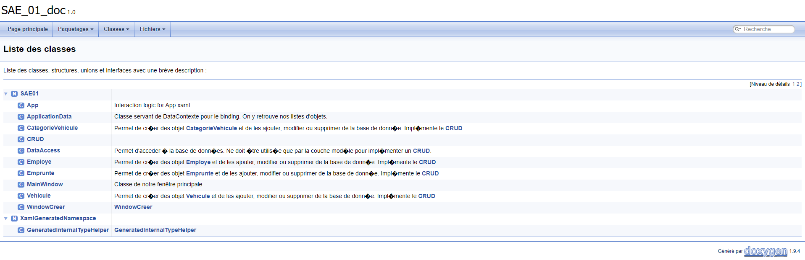

Présentation
Projet informatique : Développement en groupe de 3 d'une application de réservation de voitures pour une entreprise en utilisant C# WPF et SQL Server.
Description : Cette interface permet aux employés d'une entreprise de réserver des voitures pour leurs déplacements professionnels. Elle permet aux utilisateurs de consulter la disponibilité des voitures, de réserver une voiture pour une période de temps spécifique, de recevoir des confirmations de réservation et de modifier des réservations. Toutes les voitures et les réservations sont stockées dans une base de donneés SQL Server.
Objectifs : Le but de ce projet était de développer une application de réservation de voitures qui répondait aux besoins spécifiques d'une entreprise. L'interface devait être facile à utiliser, fiable et sécurisé.
Technologies utilisées : L'application a été développée en utilisant C# WPF pour l'interface utilisateur et SQL Server pour la base de données. Le Front ainsi que le Back sont donc fait en C#.
Développement : Nous avons commencé le projet en réunissant les besoins de l'entreprise et en élaborant un plan de développement. Nous avons ensuite développé l'application en utilisant une approche itérative, en testant régulièrement les fonctionnalités pour s'assurer qu'elles répondent aux besoins. Nous avons également effectué des tests unitaires pour le bon fonctionnement des méthodes.
En conclusion, ce projet a été un succès grâce à une planification et une communication efficaces, une utilisation judicieuse des technologies, une approche itérative et une attention constante aux besoins des utilisateurs.

